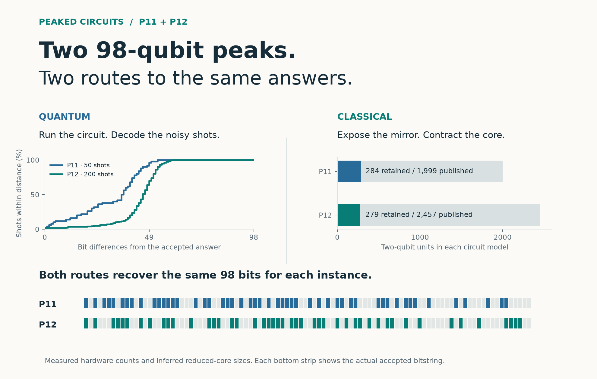
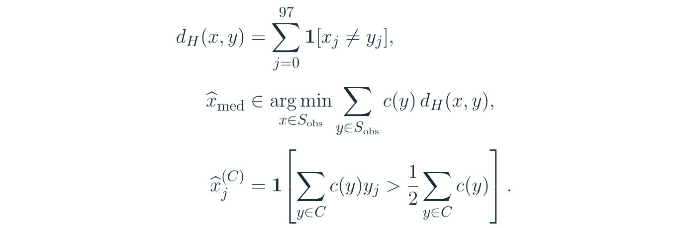
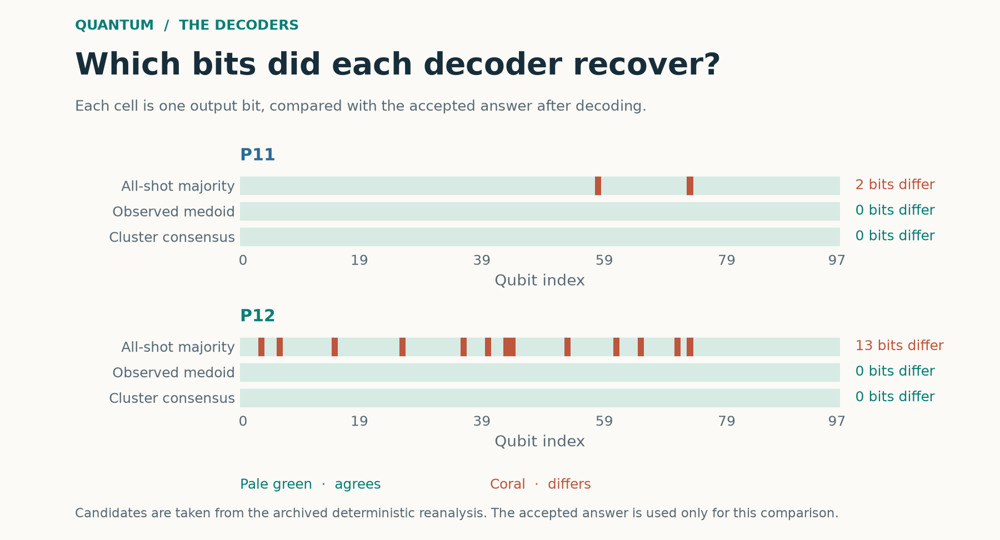

Two 98-Qubit Peaks, Found Two Ways
Quantum recovery on Helios-1 and the structure that made P11 and P12 classically tractable

Every one of the 50 hardware shots analyzed for P11 was different. The accepted 98-bit answer was among them, but frequency alone could not distinguish it from the other 49 strings. P12 offered a slightly stronger clue. Its accepted answer appeared three times among 200 shots, with 198 distinct strings in total.
These were two instances of the BlueQubit Peaked Portal challenge. Both were recovered on Quantinuum Helios-1 and accepted by the portal. A later classical method also recovered the answers directly from the circuit files. Understanding both routes means looking at two kinds of structure, the neighborhood of a bitstring in the measurements and the hidden organization of the circuit that produced it.
A peaked circuit assigns unusually high ideal probability to a particular output string. For 98 qubits there are 2⁹⁸ possible strings. The mathematical target is a maximizer of the circuit’s output probability. Hardware measurements instead sample the distribution of the physical device’s final state.
Here U is the ideal circuit, x★ is the target, and ρH is the device’s output density matrix. The distinction explains why recovering an answer can require more than selecting the most frequent hardware sample.
The quantum route
Run the circuit, then read the geometry of the shots
The hardware runs produced 50 active P11 shots at a reported cost of 282.98 HQC and 200 P12 shots at 1,373.4 HQC. The source circuits, submitted artifacts, job records, raw results, and corrected datasets are preserved in the repository.
Result framing needed repair before decoding. P11’s initial reconstruction contained 51 records, including one duplicated frame. P12 contained five overlapping frame replicas, producing 205 diagnostic records before repair. The final analyses use all 50 and 200 valid shots respectively. The repairs follow the provider’s output structure, before any candidate is scored.

Hamming distance counts the positions in which two strings disagree. It lets us ask whether a shot sits near other shots even when their exact strings differ. A peak can leave a neighborhood of partially agreeing observations, while the exact answer itself remains rare.
The weighted observed medoid considers each observed string as a possible center and sums its Hamming distances to the whole dataset. Repeated strings receive their observed multiplicity c(y). The candidate with the smallest total distance is selected.
Cluster consensus first identifies a group C of mutually close observations, then votes on each bit within that group. The formulas below make the difference explicit. Sobs is the set of distinct observed strings, while c(y) records how often each occurred.

The restriction to observed candidates matters. If the Hamming-distance objective were minimized over every possible string, each bit could be chosen independently, giving a whole-dataset majority vote. Restricting the center to an actual shot preserves a complete bit pattern that the device produced. That constraint can help when independent bit votes combine fragments from different parts of the distribution.
The deterministic cluster decoder uses average-linkage clustering of normalized Hamming distances, with a cut at 0.15, then selects the cluster with the greatest shot weight. In the reproduced analysis the selected cluster contains seven shots for each circuit, including repeated observations. The cluster’s mean distance to its consensus is about 3.57 bits for P11 and 4.71 for P12.

This is why the decoders succeeded on these datasets. The accepted string was present and centrally placed among the observations under the medoid objective. A compact group also retained enough agreement for the cluster vote to reconstruct the same answer. Whole-dataset majority missed two P11 bits and thirteen P12 bits. On P11 every exact string tied in frequency. On P12 the accepted string was also the unique frequency mode.
The resulting candidates were checked externally by the portal. Both hardware recovery submissions were subsequently verified in the Quantum Advantage Tracker. The measurements and their decoding establish successful answer recovery for these instances. P11 hardware record · P12 hardware record
The classical route
Identify the construction hidden inside the circuit
The published P11 and P12 files contain 1,999 and 2,457 atomic two-qubit units. Each parsed unit contains a controlled-Z gate and its surrounding one-qubit rotations. Much of the length comes from an obfuscated middle placed between a prefix R and a suffix P.
The classical solver examines the single-qubit rotations between consecutive controlled-Z gates. It fingerprints these rotations up to global phase, looking for a rotation A that later reappears as an inverse B. Such a pair would cancel if brought together. Several surviving inverse pairs reveal a larger mirrored arrangement of gates.
The circuit has nested blocks, and a mirror can connect different wire labels. The solver therefore uses inverse-pair anchors to infer a consistent wire permutation through each block. The recorded runs find 419 inverse-pair anchors for P11 and 569 for P12. Composing the inferred maps yields a permutation Π for the middle.
In this equation operations act from right to left. The input passes through R, then M, then P. A wire permutation can be absorbed into the labels of the suffix tensors, so the tensor network can be assembled without simulating a long sequence of explicit swap gates.
The approximation sign is essential. Residual operations survive the obfuscation. Inferring a permutation gives a reduced model whose predictions must be evaluated. Its probability calculations describe that model.

Contract the small core instead of enumerating the output space
The first major speed gain comes from reducing the circuit before contracting it. Tensor-network contraction sums shared indices in a chosen order. Its cost is governed by the intermediate tensor sizes along that order. Removing the long mirrored middle leaves a shallow network with manageable intermediates for these instances.
The solver then computes each output bit’s expectation of the Pauli-Z operator. A positive expectation favors zero, and a negative expectation favors one. The one-bit probabilities follow directly from that expectation. Combining the preferred bits gives a candidate whose amplitude is contracted separately.
These marginal calculations avoid constructing an array of 2⁹⁸ amplitudes. They also give a useful starting candidate. Correlations still matter, so separately maximizing each marginal does not by itself prove that the joint string is the most probable one.
Repair the boundary where the mirror model is incomplete
Some obfuscation patches cross the inferred boundary between the prefix and the middle. Leaving the wrong frontier gate outside the core can weaken a marginal or change the candidate. Boundary repair tests adding accessible frontier gates to the retained model and scores the resulting candidates.
In the recorded deterministic reproduction, the search chooses the best trial that improves the current candidate probability by at least 30%. It retains gate 59 for P11, and gates 60 then 64 for P12. This produces final models with 284 and 279 two-qubit units respectively. The upstream v2 implementation uses a different deterministic selection rule and reaches the same moves on these instances.

The probability is a model-selection objective. It helped the search choose a useful boundary on P11 and P12. The repair procedure was developed after an initial P12 result missed the accepted answer by four bits. Runtime execution uses the QASM, with the published-answer comparison performed afterwards.
Reuse marginals whose causal cones did not change
Boundary search evaluates several very similar circuits. Recomputing every one-bit expectation from scratch repeats much of the same work. The second speed gain comes from recognizing which calculations remain identical across trials.
Trace an output bit backward through the gates that can affect its Z expectation. These gates form its backward causal cone. Unitaries outside that cone cancel between the forward and conjugate networks in the expectation calculation. For fixed input and fixed gate matrices, an unchanged ordered cone gives exactly the same marginal.
The evaluator caches the marginal under that cone signature. It also reuses a contraction path when the ordered connectivity, index dimensions, and requested output match. Path reuse saves the search for a contraction order. The tensor values are still contracted for the current trial whenever a fresh expectation is needed.

For P11, sixteen core evaluations request 1,568 marginals, of which only 343 require a fresh contraction. For P12, thirty-two evaluations request 3,136, of which only 539 are new. Those counts explain the 78.1% and 82.8% reuse. In the recorded local comparison, solve time falls from 50.3 to 17.1 seconds for P11 and from 86.3 to 27.9 seconds for P12, giving 2.94× and 3.09× speedups. Independently recomputed final marginals agree with the cached results.
Check whether the candidate is the core’s global mode
A final numerical certificate addresses the joint-probability question. Any competitor y that differs from the candidate at bit j has probability at most the marginal probability of that opposite bit. If that marginal is already smaller than the candidate’s complete probability, every competitor with that difference is eliminated at once.
Only differences on the remaining ambiguous wires need explicit amplitude checks. P11 has one such wire, leaving one competing string. P12 has five, leaving 31. The calculation certifies a unique global mode of each reduced core to a numerical tolerance of 10⁻¹⁰. The final candidate probabilities are approximately 0.302893 and 0.236559, and both recovered strings match all 98 bits of the corresponding accepted hardware answer.
The structural approximation limits what follows from this certificate. It certifies the reduced model’s mode. Establishing an equally strong statement about the full obfuscated circuit would also require control of the operations discarded by that approximation.
Sources and implementation note
Dylan Neve’s qsim-lab proposed the structural reduction and classical recovery method, with original VM runtimes of 89 seconds for P11 and 182 seconds for P12. The tracker submission credits Dylan Neve and Claude (Anthropic). I reproduced the method and improved its evaluation loop with exact marginal caching, compatible contraction-path reuse, stable trial ordering, and reuse of an accepted trial. The reproduction also includes the reduced-core certificate described above. The cache changes and selection rule together improved the local implementation, and qsim-lab subsequently adopted my cached evaluator in its v2 solver. The issue discussion records that adoption and a separate same-VM comparison. P11 classical submission · P12 classical submission and implementation discussion
The timings in Figure 5 compare the same search with its caches off and on, using the local benchmark records. The original VM timings belong to a different environment. The tracker has verified the classical P11 submission, and its reviewer reproduced both P12 solver versions in the open P12 issue.
The hardware and classical records answer complementary questions. The hardware run shows what could be recovered from its actual measurements. The classical analysis identifies the surviving construction that made these particular files tractable. The repository contains the inputs and intermediate records behind both results. Project page · Hardware reproduction guide · Classical code, inputs, and benchmark records